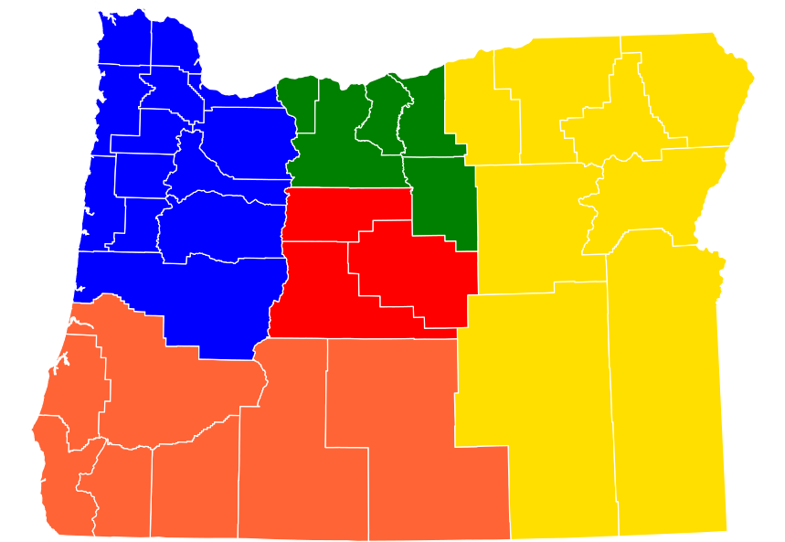

Portland, Oregon
Rose City
The City that Works
| City | Founded | Region  | Population | Urbanicity | Affluence |
|---|---|---|---|---|---|
| Portland | 1845 | Willamette Valley | 630,498 | Urban | Above Average |
Did you know?
- Portland borders Washington State separated by the Willamette river, which runs nearly 200 miles to the Pacific ocean. 3
- The Old Portland Underground tunnels exist underneath the city of Portland. Many believe the so-called "Shanghai Tunnels" were used in the late 19th and early 20th centuries for organized crime and shanghaiing, but there is little evidence to support these claims. 4
- Until the technology industry emerged in the 1990's, Portland had a reputation for being one of the most violent and dangerous port cities in the world with organized crime, illegal nightclubs, and gambling rackets. 3
- The hippie subculture arose shortly after the countercultural scene in San Fransisco. Many activists began fighting for social rights around the same time, and by the 1970's, Portland was seen as a predominantly progressive city. 3
- Portland is now the most populous city in Oregon with over 600,000 residents. The Portland metro area accounts for about 60% of Oregon's population despite taking up only 7% of the state's land. 2